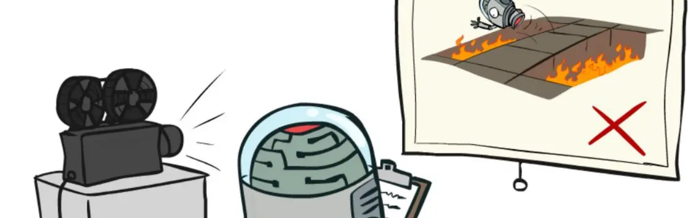
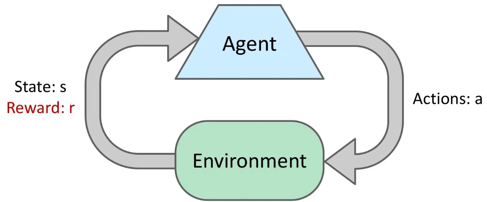
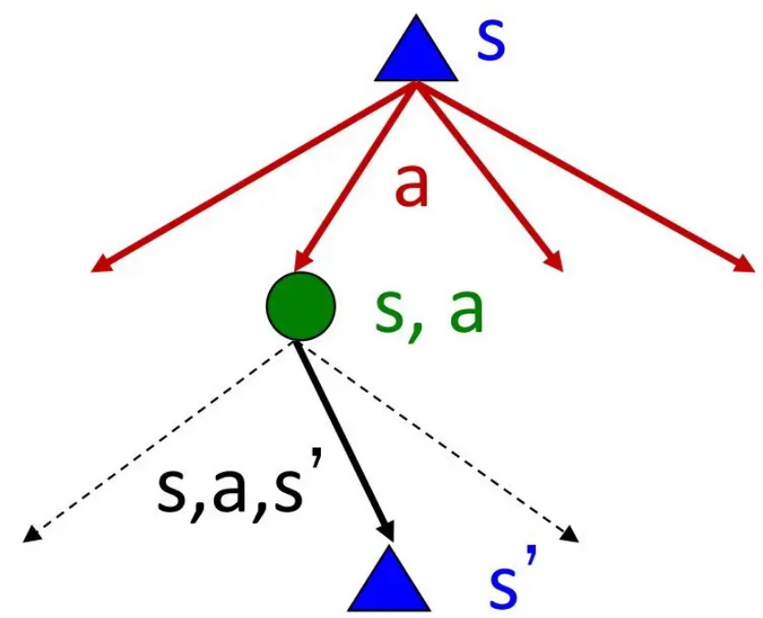

MDP와 강화학습
컴퓨터인공지능학부 | 이경수
들어가며: 우리가 배운 것
- 지금까지 우리는 Search (BFS, DFS, A*) 알고리즘을 배웠습니다.
- Search의 특징은 모든 것을 알고 있고(Fully Observable), 모든 행동이 100% 확실(Deterministic)하다는 점이었습니다.
- 이런 환경에서 에이전트는 Start에서 Goal까지의 완벽한 경로(Path)를 찾습니다.
완벽한 계획의 함정 (1)
- 만약 로봇에게 '앞으로 3칸, 오른쪽으로 1칸'이라는 계획(Plan)을 주었다고 해봅시다.
- 현실에서 로봇 바퀴가 미끄러져 2칸만 갔다면 어떻게 될까요?
완벽한 계획의 함정 (2)
- 이처럼 고정된 순서의 명령어(Plan)는 불확실성(Uncertainty)이 존재하는 환경에서 매우 취약합니다.
- 예측할 수 없는 변화가 생기면 전체 계획이 무용지물이 되기 때문입니다.
현실의 의사결정
- 자율주행: 옆 차가 갑자기 끼어들 확률이 존재합니다.
- 의료 진단: 같은 약을 투여해도 환자마다 반응이 다릅니다.
- 주식 투자: 내일의 가격을 100% 확신할 수 없습니다.
오늘의 핵심 질문
"내 맘대로 되지 않는 세상에서
어떻게 최적의 행동을 결정할까?"
오늘의 로드맵
핵심 예제: Grid World

- 앞으로 강의 내내 사용할 4x3 Grid World입니다.
- Start에서 +1로 안전하게 가는 것이 목표입니다.
- -1은 피해야 하며, Wall은 통과할 수 없습니다.
보조 예제: Racing Car
- 공간 이동만이 MDP가 아님을 보여줄 보조 예제입니다.
- 자동차 엔진의 상태(Cool, Warm, Overheated)를 관리하며 달리는 게임입니다.
- 나중에 자세히 살펴보겠습니다.
Racing MDP
상태: Cool, Warm, Overheated
행동: Slow, Fast
SECTION 01
From Search to Policies
완벽한 계획에서 유연한 대응으로
Search 알고리즘 복습
- Search 트리를 탐색할 때, 내가 행동 \(A\)를 선택하면 환경은 반드시 결과 \(S'\)를 내놓았습니다.
- 결과가 하나뿐이므로 미래를 끝까지 완벽하게 그릴 수 있었습니다.
Search의 전제
에이전트의 결정이 세계의 변화를 100% 지배한다.
환경과 계획: Deterministic vs Stochastic
Deterministic (Search)
행동의 결과가 단 1개로 결정됨. 완벽한 Plan 수립 가능.
Stochastic (MDP)
행동 결과가 확률 분포로 나타남. Plan은 중간에 실패할 수 있음.
Minimax와 Expectimax 복습
- 우리는 이미 불확실성을 다루는 트리를 배운 적이 있습니다. (적대적 탐색)
- Minimax: 적이 최악의 행동을 할 것이라 가정 (결정론적 적).
- Expectimax: 환경이 확률적으로 움직인다고 가정 (Chance Node의 기댓값 계산).
Expectimax의 한계: 트리의 폭발
- 그렇다면 이 세상의 모든 경우의 수를 Expectimax 트리로 그리면 되지 않을까요?
- 가능한 모든 확률 분기점을 그리면 트리의 크기가 지수 함수적으로(Exponentially) 폭발합니다.
- 더 큰 문제는, 똑같은 위치(상태)를 트리 안에서 수천 번 중복해서 계산하게 된다는 점입니다.
Expectimax Tree (폭발)
MDP Graph (순환)
상태의 반복 방문 문제
- Grid World에서 왼쪽으로 갔다가 오른쪽으로 오면 원래 자리입니다.
- 하지만 트리는 이를 완전히 새로운 가지(Branch)로 취급하여 또 계산합니다.
새로운 접근: Policy (정책)
- Plan이 "앞으로 가, 오른쪽으로 가"라는 맹목적 명령어라면,
- Policy(정책)는 "만약 네가 (1,1)에 있다면 위로 가고, (1,2)에 있다면 오른쪽으로 가"라는 조건부 매뉴얼입니다.
Policy의 정의
- 정책은 수학적으로 기호 \(\pi\) (파이)로 표기합니다.
- 상태(State)를 입력으로 받아, 행동(Action)을 출력하는 함수입니다.
Plan vs Policy 비교
| 비교 | Plan (계획) | Policy (정책) |
|---|---|---|
| 출력물 | 행동들의 순서 (List) | 상태-행동 매핑 (Function) |
| 유연성 | 경로 이탈 시 실패 | 어느 위치에서든 대응 가능 |
| 비유 | 내비게이션의 추천 경로 | 모든 교차로에 서 있는 표지판 |
예시: 로봇이 미끄러졌을 때 Plan의 반응
- 로봇이 (1,1)에서 위로 가려다 미끄러져 제자리(1,1)에 남았습니다.
- Plan 로봇: "1번 명령 완료. 이제 2번 명령인 오른쪽으로 가야지."
- 결과: 엉뚱한 곳(2,1)으로 가서 벽에 부딪힙니다.
예시: 로봇이 미끄러졌을 때 Policy의 반응
- 로봇이 똑같이 (1,1)에서 제자리에 남았습니다.
- Policy 로봇: "현재 내 위치 센서 확인. 아직 (1,1)이군. 메뉴얼 \\(\\pi(1,1)\\)을 보니 위로 가라고 되어 있네. 다시 위로 간다."
- 결과: 목표를 향해 계속 수정하며 나아갑니다.
SECTION 02
Stochastic Actions & Grid World
불확실성을 숫자로 나타내기
4x3 Grid World 구조
- 앞으로 우리가 해결할 맵입니다.
- 에이전트가 겪을 수 있는 세계의 축소판입니다.
상태(State) 좌표계
- 지도상의 각 칸을 우리는 좌표
(x, y)로 부르겠습니다. - 왼쪽 아래가
(1, 1)입니다. 총 11개의 유효한 상태가 있습니다. (벽 제외)
Start, Wall, Terminal States
- Start State (1,1): 에이전트가 항상 처음 시작하는 위치입니다.
- Wall (2,2): 들어갈 수 없는 물리적 장애물입니다. 좌표 집합에서 제외됩니다.
- Terminal States (4,3), (4,2): 이곳에 도착하면 게임(Episode)이 즉시 종료되며 보상을 받습니다.
가능한 행동(Actions)
- 에이전트는 매 턴마다 4가지 행동 중 하나를 고를 수 있습니다.
- \(A = \{ \text{North}, \text{South}, \text{East}, \text{West} \}\)
결정론적 이동 시뮬레이션
- 만약 이 세상이 결정론적(Deterministic)이라면, North를 누르면 100% 윗 칸으로 갑니다.
- 이 경우 Search 알고리즘으로 경로를 짜면 완벽합니다.
확률적 이동: Noisy Movement 도입
- 하지만 Grid World는 확률적(Stochastic) 환경입니다.
- 바닥이 미끄러워서, 또는 모터의 결함으로 인해 내가 의도한 방향과 다른 방향으로 이동할 수 있습니다.
Grid World: 확률적 이동 (Noisy Movement)
- 의도한 방향으로 80% 확률로 전진
- 좌/우 직각 방향으로 각각 10% 미끄러짐
- 벽(Wall)이나 경계에 부딪히면 제자리에 정지
전이 테이블 \( T(S, A, S') \) 예시
- T((1,1), North, (1,2)) = 0.8
- T((1,1), North, (2,1)) = 0.1
- T((1,1), North, (1,1)) = 0.1 (벽 충돌 제자리)
Living Reward 개념
- 에이전트가 Terminal State에 도달하기 전까지, 매 턴 살아 숨쉴 때마다 받는 기본 보상을 Living Reward라고 부릅니다.
- 이 값이 양수냐 음수냐에 따라 에이전트의 성향이 완전히 바뀝니다.
보상에 따른 행동 변화 (직관)
- Living Reward가 0이라면? \(\rightarrow\) 서두를 필요가 없습니다. 무한히 빙빙 돌지도 모릅니다.
- Living Reward가 -0.01 이라면? \(\rightarrow\) 페널티가 작으므로 안전하게 돌아서 목적지로 갑니다.
- Living Reward가 -2.0 이라면? \(\rightarrow\) 매 턴 고통받으므로, 위험을 감수하고서라도 최단 경로로 돌진합니다.
SECTION 03
Racing MDP Example
공간 이동이 아닌 MDP
공간이 아닌 MDP: Racing
- Grid World는 직관적이지만 자칫 MDP를 '지도 찾기' 알고리즘으로 오해하게 만듭니다.
- 자동차 경주 대회에서 엔진 온도를 관리하는 에이전트를 상상해 봅시다.
상태 정의: 엔진의 상태
- 여기서 상태(State)는 자동차의 위치가 아니라 엔진의 온도입니다.
- \(S = \{ \text{Cool}, \text{Warm}, \text{Overheated} \}\)
행동 정의: 운전 스타일
- 에이전트가 할 수 있는 선택은 가속 페달을 얼마나 밟을지입니다.
- \(A = \{ \text{Slow}, \text{Fast} \}\)
Racing MDP: 상태 전이 다이어그램

- 상태(State): Cool, Warm, Overheated
- 행동(Action): Slow, Fast
- Fast는 빠르지만 엔진이 가열될 위험(확률) 존재
- Overheated 도달 시 큰 패널티와 함께 에피소드 종료
| State | Action | Next State (Prob) | Reward |
|---|---|---|---|
| Cool / Warm | Slow | Deterministic | +1 |
| Cool | Fast | Warm (0.7) / Cool (0.3) | +2 |
| Warm | Fast | Overheated (0.6) / Warm (0.4) | +2 |
| Overheated | - | - | -10 |
보상(Reward) 구조
- Slow로 달리면 보상 +1.
- Fast로 달리면 더 빨리 가므로 보상 +2.
- 하지만 Overheated 상태가 되면 게임이 끝나며 페널티 보상 -10.
위험과 보상의 트레이드오프
- 이 예제는 단기적인 큰 보상(Fast)을 쫓다가 장기적인 파멸(Overheated)을 맞을지, 안전하게(Slow) 갈지를 수학적으로 계산하는 문제를 제기합니다.
Grid World와 Racing의 공통점
- 모양은 전혀 다르지만 본질은 완전히 같습니다.
- 현재의 State가 있고, Action을 선택하면, 확률적 Transition을 거쳐 다음 State로 가며 Reward를 받습니다.
추상화(Abstraction)의 힘
SECTION 04
Formal Definition of MDP
세상을 규정하는 5가지 알파벳
Markov Decision Process 수학적 정의
- 우리가 지금까지 본 모든 요소들을 모아서, 수학적으로 엄밀한 튜플(Tuple)로 정의합니다.
MDP 5-Tuple
S: State Space
- 에이전트가 처할 수 있는 모든 상황의 집합입니다.
- 이산적(Discrete)일 수도 있고 연속적(Continuous)일 수도 있습니다.
- 본 강의에서는 유한한 갯수의 이산 상태(Grid World)만 다룹니다.
A: Action Space
- 각 상태에서 에이전트가 취할 수 있는 선택지입니다.
- 일반적으로 상태 \(s\)에 따라 가능한 행동 집합 \(A(s)\)가 다를 수 있지만, 편의상 전역 집합 \(A\)로 표기합니다.
T: Transition Function
- 가장 중요한 요소입니다. 환경의 물리법칙(Dynamics)을 나타냅니다.
- \(T(s, a, s')\)는 상태 \(s\)에서 행동 \(a\)를 했을 때 다음 상태가 \(s'\)이 될 확률입니다.
- 표기법: \(P(S_{t+1}=s' \mid S_t=s, A_t=a)\)
T 확률의 총합 조건
- 상태 \(s\)에서 행동 \(a\)를 취했을 때 일어날 수 있는 모든 미래의 확률을 더하면 항상 1이 되어야 합니다.
R: Reward Function
- 에이전트가 목표를 향해 가도록 유도하는 신호입니다.
- 전이가 일어날 때 얻는 즉각적인(Immediate) 점수입니다.
R의 다양한 표기법
- 문헌에 따라 Reward 함수를 표기하는 방식이 다릅니다.
- \(R(s)\) : 특정 상태 \(s\)에 들어섰을 때의 보상 (Grid World에 적합)
- \(R(s, a)\) : 상태 \(s\)에서 행동 \(a\)를 취할 때의 보상 (비용/에너지 소모)
- \(R(s, a, s')\) : 가장 엄밀한 표현. 상태, 행동, 결과에 따른 보상.
γ: Discount Factor (할인율)
- 미래 가치를 현재 가치로 환산할 때 곱해주는 0과 1 사이의 상수입니다. \(0 \le \gamma < 1\)
- 왜 필요한지는 잠시 후 'Return' 파트에서 자세히 증명합니다.
Terminal States (종료 상태)
- 에피소드가 끝나는 상태입니다.
- Grid World의 (+1), (-1) 칸이 여기에 해당합니다.
- 종료 상태에 도달하면 모든 Action에 대해 자기 자신으로 100% 돌아오고, 이후의 보상은 영원히 0인 상태(Absorbing state)로 간주할 수 있습니다.
Finite vs Infinite Horizon
- Finite Horizon (유한 시간): \(T\)턴이 지나면 무조건 게임이 끝남. 시간에 따라 최적 정책이 바뀔 수 있음. (예: 1턴 남았을 때와 100턴 남았을 때의 전략이 다름 - Non-stationary)
- Infinite Horizon (무한 시간): 기한이 없음. 항상 동일한 최적 정책이 유지됨. (Stationary policy).
Model-based Assumption (T와 R을 앎)
- 알려진 MDP 모델(T, R)을 바탕으로 최적 정책을 계산하는 과정을 Planning(계획)이라 합니다.
- 이때 우리는 환경의 확률 \(T\)와 보상 \(R\)의 모든 숫자를 완벽하게 알고 있다고 가정합니다. (신의 시점)
- 나중에 배울 강화학습(RL)은 이 \(T\)와 \(R\)을 모를 때의 이야기입니다.
매핑 연습: Grid World를 MDP Tuple로
- S = { (1,1), (1,2), ... (4,3) }
- A = { N, S, E, W }
- T = North 시 의도방향 80%, 수직방향 각 10%...
- R = (4,3)에서 +1, (4,2)에서 -1, 그 외에는 Living Reward.
- \(\gamma = 0.9\) (예시)
SECTION 05
Markov Property
과거는 잊어라, 현재만 남겨라
과거, 현재, 그리고 미래
Markov Property의 직관적 의미
- "미래는 오직 현재 상태에 의해서만 결정되며, 그 상태에 도달하기까지의 과거 역사(History)와는 독립적이다."
- 현재 상황만 알면, 과거에 무슨 일이 있었는지는 미래를 예측하는 데 아무런 추가 정보를 주지 않는다는 뜻입니다.
Markov Property 수학식
- 조건부 확률에서 조건부 부분에 과거 \(S_{t-1}, A_{t-1}\) 등을 넣어도 값이 변하지 않는다는 수학적 표현입니다.
History vs Current State
- History = \(S_0, A_0, S_1, A_1, \dots, S_t\) (지금까지의 모든 기록)
- State = \(S_t\) (현재의 요약본)
- 마르코프 성질이 성립하면, 거대한 History 데이터를 굳이 메모리에 저장할 필요 없이 State 하나만 들고 있으면 됩니다.
Sufficient Statistic (충분 통계량)
- 즉, State는 미래를 예측하기 위한 충분 통계량(Sufficient Statistic) 역할을 해야 합니다.
- 과거 정보 중 미래 예측에 필요한 엑기스만 현재 State 안에 모두 담겨 있어야 합니다.
예시 1: 로봇의 위치
- 로봇이 지금 (2,2) 좌표에 서 있습니다.
- 이 로봇이 1초 뒤 어디로 갈지 예측하려면 좌표
(x,y)만 알면 될까요?
예시 1의 한계: 속도가 필요하다면?
- 만약 로봇이 시속 100km로 달리고 있었다면, 관성 때문에 멈출 수 없습니다.
- 과거(1초 전 위치)를 알아야 속도를 알 수 있으므로, 단순 좌표
(x,y)만으로는 마르코프 성질이 깨집니다!
State Augmentation (상태 확장)
- 마르코프 성질을 만족시키려면 어떻게 해야 할까요?
- 과거의 필수 정보를 현재 상태에 끼워 넣습니다. (Augmentation)
- 새로운 State =
(위치 x, 위치 y, 속도 vx, 속도 vy) - 이제 이 State만 보면 과거가 필요 없습니다. 마르코프 성질이 회복되었습니다!
예시 2: 체스판의 상태
- 체스판에 말들이 놓여 있는 현재 사진 한 장은 마르코프 상태일까요?
- 거의 그렇습니다. 과거에 말을 어떻게 움직였든 현재 판도만으로 최선의 수를 계산할 수 있습니다.
- (엄밀히는 앙파상, 캐슬링 조건 때문에 약간의 추가 정보가 필요함)
예시 3: 의료 AI의 환자 상태
- 오늘 환자의 혈압, 심박수, 체온만 측정했습니다. 이것은 마르코프 상태일까요?
- 아닙니다. 이 환자가 어제 어떤 약을 먹었는지(History) 모르면 내일의 부작용을 예측할 수 없습니다.
- State는 과거 전체가 아니라, 미래 예측에 필요한 약물 이력, 검사 결과 등을 충분히 담은 요약 정보(충분 통계량)여야 합니다.
SECTION 06
Reward, Return, and Discounting
눈앞의 마시멜로와 미래의 이익
단기 보상 vs 장기 가치
- 강화학습 에이전트는 지금 당장의 \(R_{t+1}\)만 보고 달리지 않습니다.
- 앞으로 남은 모든 인생(?)에서 받을 보상들의 총합을 극대화하려 합니다.
Return (누적 보상)의 정의
- 에피소드 시작부터 끝까지 받는 보상의 총합을 Return (\(G_t\))이라 합니다.
무한한 에피소드의 문제 (발산)
- 만약 게임이 영원히 끝나지 않는다면(Infinite horizon), \(G_t\)는 무한대로 발산(Infinity)해버립니다.
- 무한대와 무한대를 비교할 수 없으므로 수학적인 최적화를 수행할 수 없습니다.
해결책: Discounting (할인)
- 이 문제를 해결하기 위해 Discount Factor (할인율, \(\gamma\))를 도입합니다.
- 이번 강의의 infinite-horizon 문제에서는 \(0 \le \gamma < 1\) 범위를 주로 사용합니다.
- 미래의 보상일수록 \(\gamma\)를 여러 번 곱해서 그 가치를 깎아버립니다.
Discounted Return 수식
γ = 0 일 때의 에이전트
- 만약 \(\gamma = 0\) 이라면 어떻게 될까요?
- \( G_t = R_{t+1} + 0 + 0 + \dots = R_{t+1}\)
- 오직 눈앞의 보상만 보는 초근시안적(Myopic) 에이전트가 됩니다.
γ가 1에 가까울 때의 에이전트
- 만약 \(\gamma = 0.99\) 이라면 어떻게 될까요?
- 100 스텝 뒤의 보상도 현재 가치의 약 36% 로 꽤 크게 쳐줍니다.
- 먼 미래까지 내다보는 장기적(Farsighted) 에이전트가 됩니다.
무한 등비급수 수렴 증명
- 매 턴마다 에이전트가 받을 수 있는 최대 보상을 \(R_{\max}\)라고 합시다.
- 무한한 보상의 합은 기하급수의 합 공식에 의해 유한한 상수로 수렴합니다.
Reward Shaping: Living Reward
- Grid World에서 매 턴 이동할 때마다 기본으로 받는 보상(Living Reward)을 바꿔보면 에이전트의 성격이 어떻게 변할까요?
- 목표: +1, 함정: -1
Living Reward에 따른 최적 정책 변화
R = -0.01 (풍요로운 세상)
패널티가 거의 없어, 가장 안전한 길로 크게 우회함 (보수적).
R = -2.00 (가혹한 세상)
살아있는 것 자체가 엄청난 고통. 위험(-1)을 감수하더라도 최단거리로 질주함 (공격적/자살특공대).
SECTION 07
Policy, Value, Q Function
무엇을 할 것인가, 그것은 얼마나 좋은가
Policy (π)란 무엇인가?
- 앞서 짧게 배웠듯, 어떤 상태에서 어떤 행동을 할지 알려주는 맵(Map)입니다.
- 단순한 지시문이 아니라, 조건부 확률로 표현됩니다.
Deterministic Policy
- 결정론적 정책: 상태 \(s\)가 주어지면 100% 확률로 특정한 행동 하나만 반환합니다.
Stochastic Policy
- 확률론적 정책: 상태 \(s\)에서 여러 행동을 확률적으로 섞어서 사용합니다.
- 예: 가위바위보 게임에서 (묵 33%, 찌 33%, 빠 33%)를 내는 전략.
최적 정책 (Optimal Policy, π*)
- 수많은 정책 중에서, 평균적으로 가장 높은 Return을 가져다주는 정책을 최적 정책 \(\pi^*\) 라고 부릅니다.
- 강화학습의 궁극적인 목표는 바로 이 \(\pi^*\)를 찾는 것입니다.
상태 가치 함수 \( V(s) \)의 정의
- 상태 가치 함수 \(V^\pi(s)\)는 에이전트가 어떤 정책 \(\pi\)를 따르고 있을 때, 상태 \(s\)에 서 있으면 앞으로 평균적으로 몇 점을 벌 것 같은지 나타내는 '상태 점수'입니다.
Grid World \( V(s) \) 히트맵 예시
- +1 목적지에 가까운 상태일수록 V 값이 높습니다 (예: 0.8, 0.9).
- 멀어질수록 감가상각과 험난한 여정 때문에 값이 작아집니다.
\( V(s) \) 예시
0.6 | 0.7 | 0.8 | +1.0
행동 가치 함수 \( Q(s,a) \)의 정의
- 행동 가치 함수 \(Q^\pi(s,a)\)는 상태 \(s\)에서 일단 행동 \(a\)를 한번 강제로 취해보고, 그 다음부터는 정책 \(\pi\)를 따랐을 때 얻게 될 '상태-행동 점수'입니다.
V vs Q (상태 점수 vs 행동 점수)
| 비교 | \( V(s) \) | \( Q(s, a) \) |
|---|---|---|
| 평가 대상 | 지금 내가 서 있는 '칸' | 이 칸에서 할 '특정 행동' |
| 질문 | 이 자리가 얼마나 좋지? | 여기서 오른쪽으로 가면 얼마나 좋지? |
| 결과 갯수 | 상태 1개당 1개의 숫자 | 상태 1개당 4개(행동 수)의 숫자 |
V와 Q의 수학적 관계
- 상태 \(s\)의 최적 가치 \(V^*(s)\)는, 그 자리에서 할 수 있는 모든 행동들의 가치 \(Q(s,a)\) 중에서 가장 큰 값과 같습니다.
V와 Q 관계 시각화
상태 s에서 행동을 고민합니다.
• 북쪽 Q-value: 8.5
• 동쪽 Q-value: 6.2
• 남쪽 Q-value: 4.0
Q가 있으면 정책 찾기가 쉬운 이유
- 만약 내 손에 완벽한 Q-table이 있다면 어떻게 행동할까요?
- 간단합니다. 지금 서 있는 상태 행에서 가장 값이 큰 행동 열을 고르면 끝입니다!
- 환경의 룰(T, R)을 몰라도 행동할 수 있습니다. (Model-free의 핵심)
최적 가치 \( V^*(s) \)와 \( Q^*(s,a) \)
- 모든 정책 중에서 가장 높은 가치를 내는 함수를 최적 가치 함수라 부릅니다.
- 별표(\(*\))를 붙여 표기합니다.
SECTION 08
Bellman Equation Intuition
현재와 미래를 잇는 마법의 방정식
Bellman 방정식의 철학: 재귀(Recursion)
- 만약 100칸짜리 미로 끝에 보물이 있다면, 99번째 칸의 가치는 얼마일까요? 당연히 보물에 가깝습니다.
- Bellman 방정식의 핵심: "현재 내 자리의 가치는 바로 옆 칸의 가치로 정의할 수 있다."
가치 = 즉각 보상 + 미래 가치
- 수식을 아주 단순한 형태에서부터 조립해봅시다.
미래 가치의 할인 (γ 도입)
- 앞서 배웠듯 미래의 가치는 이자가 깎이듯 할인율 \(\gamma\)가 붙어야 합니다.
미래는 불확실하다 (확률의 개입)
- 결정론적 환경이라면 위 수식으로 끝납니다.
- 하지만 Grid World처럼 북쪽으로 가려다 미끄러지는 세상이라면? "다음 칸"이 어딘지 확정할 수 없습니다.
하나의 행동, 여러 개의 다음 상태
- 행동 \(a\)를 했을 때 떨어질 수 있는 다음 상태 \(s'\)가 여러 개 존재합니다.
- 이들의 가치를 어떻게 하나로 묶어야 할까요?
환경의 불확실성: 기댓값 (Expectation)
- 정답은 가중 평균(Weighted Average)을 내는 것입니다.
- 확률 분포를 가중치로 삼아 모든 가능한 미래의 가치를 합산합니다.
Sum (합산) 연산자의 의미 (파란색)
환경의 확률적 합산
도달할 수 있는 모든 \(s'\) 우주에 대해 확률을 곱해 더한다.
전이 확률 T는 가중치다
- 앞에서 배운 \(T(s,a,s')\)가 바로 여기서 가중치 역할을 합니다.
- 80% 확률로 일어날 미래는 가치에 크게 반영되고, 10% 확률인 미래는 작게 반영됩니다.
에이전트의 자유 의지: 선택
- 우리는 환경이 던지는 주사위만 맞는 존재가 아닙니다.
- 에이전트는 여러 행동(North, South, East, West) 중에서 내 의지로 하나를 선택할 수 있습니다.
에이전트의 최적화: Max 연산자 (오렌지색)
에이전트의 최적 선택
여러 선택지 중 가치가 가장 높은 최선의 행동만을 고른다.
Max와 Sum의 충돌과 결합
- 내가 선택(Max)한 행동이 환경에 들어가면, 환경은 주사위(Sum)를 굴려 결과를 돌려줍니다.
- 이 두 블록을 합치면 그 유명한 방정식이 완성됩니다.
블록 조립: Bellman Expectation Equation
- 고정된 정책 \(\pi\)를 따를 때의 방정식입니다. (Max가 없음)
블록 조립: Bellman Optimality Equation
- 최적 정책을 찾기 위한 방정식입니다. (에이전트의 의지 Max가 들어감)
블록 조립: Q-form Bellman Equation
- 똑같은 원리를 행동 가치 Q 기준으로 쓴 것입니다.
- 이미 현재 행동 \(a\)를 했으므로 바깥에 Max는 없고, 다음 상태 \(s'\)에서 최고의 행동 \(a'\)를 고르기 위해 괄호 안쪽에 Max가 붙습니다.
자주 묻는 질문: 왜 Sum이 Max 안에 있나요?
- 수학식을 보면 항상 \(\max\) 기호 뒤에 \(\sum\) 기호가 나옵니다. 왜 그럴까요?
- 시간의 순서 때문입니다!
- 내가 먼저 행동을 고르고(Max), 그 다음에 환경이 미끄러짐을 결정(Sum)하기 때문입니다.
V의 재귀 트리 시각화

- 루트 노드: 현재 상태 \(s\) (V)
- 첫 번째 가지: 행동 \(a\) 선택 (Max)
- 두 번째 가지: 다음 상태 \(s'\) 전이 (Sum)
Backup Diagram
\(\bigcirc\) \( V(s) \)
\(\downarrow\) max
\(\blacksquare\) \( Q(s,a) \)
\(\downarrow\) sum
\(\bigcirc\) V(s')
SECTION 09
Bellman Backup Worked Example
숫자로 직접 계산해보자
Bellman Backup: 손으로 풀어보자
- 방금 본 길고 복잡한 수식이 실제 코딩할 때는 그저 사칙연산에 불과하다는 것을 증명하겠습니다.
문제 상황 세팅
- 현재 위치 상태 \(s\)에서 행동을 고르려 합니다.
- 선택지는 단 두 개:
North와East - 다음 상태들의 기존 \(V\) 값은 이미 알고 있다고 가정합니다.
주어진 조건
- 할인율: \(\(\gamma\) = 0.9\)
- Living Reward: 이동 시 항상 \(R = -1\)
Q(s, North) 기대 미래 가치 도출
- North 행동 시 3가지 전이 가능성:
- 0.8 확률로 (1,2) 도달 → V(1,2) 반영
- 0.1 확률로 (2,1) 도달 → V(2,1) 반영
- 0.1 확률로 제자리 (1,1) → V(1,1) 반영
- 기대 미래 가치 = 0.8*V(1,2) + 0.1*V(2,1) + 0.1*V(1,1)
- \( Q(s, \text{North}) = R + \gamma \times \text{기대 미래 가치} \)
Q(s, East) 기대 미래 가치 도출
- East 행동 시 3가지 전이 가능성:
- 0.8 확률로 (2,1) 도달 → V(2,1) 반영
- 0.1 확률로 (1,2) 도달 → V(1,2) 반영
- 0.1 확률로 제자리 (1,1) → V(1,1) 반영
- 기대 미래 가치 = 0.8*V(2,1) + 0.1*V(1,2) + 0.1*V(1,1)
- \( Q(s, \text{East}) = R + \gamma \times \text{기대 미래 가치} \)
Max 연산: 최적 행동의 선택
- 두 행동의 가치를 모두 구했습니다. 이제 에이전트의 시간입니다.
- \(Q(s, North) = 6.56\)
- \(Q(s, East) = 3.50\)
결과 해석: 불확실성 감수
- 왜 \(V=5\) 인 확실한 길을 놔두고 불확실한 North를 선택했을까요?
- 20% 확률로 망할 위험(V=2)을 감수하더라도, 80% 확률로 터지는 대박(V=10)의 기댓값이 훨씬 크기 때문입니다.
SECTION 10
Dynamic Programming View
알고리즘으로 문제 풀기
수학 식에서 알고리즘으로
- 방금까지 우리는 \(V\)를 구하는 '수학 공식'을 배웠습니다.
- 하지만 컴퓨터에게 이 공식을 주고 코드를 짜라고 하면 에러가 납니다. 왜일까요?
순환 참조의 문제
- 방정식의 좌변에 \(V(s)\)가 있고, 우변에도 \(V(s')\)가 있습니다.
- 자기 자신을 정의하기 위해 자기 자신이 필요한 순환 참조(Recursive) 구조입니다.
- 연립방정식으로 풀기에는 상태가 너무 많습니다. (바둑의 상태 = \(10^{170}\))
Dynamic Programming (동적 계획법)
- 복잡한 문제를 잘게 쪼개어 풀고, 그 결과를 저장해 두었다가 다시 쓰는 프로그래밍 기법입니다.
- Bellman 방정식을 알고리즘으로 변환하는 핵심 도구입니다.
DP의 핵심: Overlapping Subproblems
- Grid World에서 (1,1)의 가치를 구하려면 (1,2)의 가치를 알아야 합니다.
- 그런데 (2,1)의 가치를 구할 때도 (1,2)의 가치가 필요할 수 있습니다.
- 부분 문제들이 겹칩니다! 매번 새로 계산하지 않고 기억(Memoization) 해둡니다.
반복 업데이트 (Iterative Update)
- 정확한 정답을 한 번에 구하려 하지 않습니다.
- 처음엔 아무 숫자나 (예: 0) 적어둔 뒤, Bellman 공식을 업데이트 룰로 사용하여 값을 계속 고쳐 나갑니다.
가치 전파(Value Propagation)의 직관
- 처음 0으로 가득 찬 세상에서, 목표 지점(+1) 근처의 칸들만 다음 턴에 점수를 얻습니다.
- 시간이 흐르며 그 점수가 물결처럼 퍼져나가 출발점까지 도달하게 됩니다.
SECTION 11
Value Iteration
가치가 파도처럼 밀려온다
Value Iteration 알고리즘 목표
- 목표: 모든 상태의 최적 가치 \(V^*(s)\)를 컴퓨터가 스스로 찾아내게 만드는 것.
- 준비물: Bellman Optimality Equation (업데이트용).
Step 0: 모든 V를 0으로 초기화
- 아무 정보가 없는 상태 \(k=0\) 단계입니다. 모든 칸의 가치가 0.0 입니다.
- (단, Terminal state인 +1 칸은 고정된 자기 점수를 가집니다.)
k=1: 첫 번째 업데이트
- Bellman Backup을 한 번 돌렸습니다. (\(k=1\))
- +1 바로 옆에 있던 칸만 (보상+1 * 확률) 계산에 의해 0.7 이라는 값을 얻었습니다. 나머지는 여전히 근처에 0밖에 없어서 0입니다.
k=2: 가치의 확산
- 두 번 돌렸습니다. (\(k=2\))
- 이제 0.7 옆에 있던 칸들이 0.7의 존재를 깨닫고 0.5 정도의 값을 얻기 시작합니다. 값이 퍼져나갑니다.
k=100: 전체 맵으로의 수렴
- 수백 번을 돌리면, 어느 순간 값이 더 이상 변하지 않고 고정됩니다.
- 이를 수렴(Convergence)이라 하며, 이때의 값들이 바로 정답인 최적 가치 \(V^*\)입니다.
수렴 조건 (Stopping Condition)
- 컴퓨터는 언제 while 루프를 멈춰야 할까요?
- 모든 칸의 \(V_{new}\) 와 \(V_{old}\) 의 차이를 구합니다.
- 가장 크게 변한 칸의 변화량조차 아주 작은 상수 \(\epsilon\) 보다 작다면 종료합니다.
Δ < ε 의 시각적 의미
- 돌을 던진 호수의 파문이 점점 잦아들다가, 마침내 수면이 완전히 잔잔해지는 현상과 완벽히 일치합니다.
Value Iteration 의사코드
Initialize V(s) = 0 for all s
Repeat:
delta = 0
For each state s:
v_old = V(s)
V(s) = max_a ∑ T(s,a,s')[ R + γ V(s') ]
delta = max(delta, |v_old - V(s)|)
Until delta < ε한계점: Max 연산의 무거움
- Value Iteration은 한 스텝을 돌 때마다 모든 가능한 행동 \(a\)에 대해 수식을 다 전개한 뒤
max를 찾아야 합니다. - 행동의 가짓수가 1,000개라면? 매 반복마다 끔찍한 연산이 필요합니다.
SECTION 12
Policy Extraction
숫자에서 행동 화살표 뽑아내기
V는 행동을 직접 말해주지 않는다
- 우리는 완벽한 가치 지도 \(V^*(s)\)를 얻어냈습니다.
- 하지만 \(V\) 맵만으로는 어떤 방향으로 가야 할지 행동이 직접 주어지지 않습니다. 단, 모델 T, R을 알면 One-step lookahead로 행동을 찾을 수 있습니다.
One-step Lookahead의 필요성
- 내 옆 칸에 +10점, 아래 칸에 +5점이 적혀 있다고 합시다. 무조건 옆으로 가면 될까요?
- 만약 옆으로 가는 길이 얼음판이라 90% 확률로 뒤로 미끄러진다면?
- 즉, 점수(V)뿐만 아니라 환경의 확률(T)을 고려하여 기댓값을 한 번 더 계산해야만 진짜 행동을 고를 수 있습니다.
Argmax 연산자 도입
max는 가장 큰 "값"을 반환합니다. (예: 8.5)argmax는 그 가장 큰 값을 만들어낸 "행동"을 반환합니다. (예: North)
argmax의 결과물입니다.V에서 정책 화살표 도출하기
- 결국 V를 알고 있어도, 행동을 하려면 매번 \(T\)를 꺼내서 Sum 연산을 다시 해야 합니다.
Q를 알면 정책 추출이 쉬운 이유
- 반면, 최적 행동 가치 \(Q^*(s,a)\) 지도를 가지고 있다면 어떨까요?
- Sum과 T 계산이 Q 안에 이미 다 녹아있기 때문에, 그냥 표에서 제일 큰 값을 보고 화살표를 그리면 끝납니다!
SECTION 13
Policy Iteration
평가와 개선의 이분법
Value Iteration의 단점 극복
- VI는 매 루프마다 모든 방향의 기댓값을 구하고
max를 치는 피곤한 짓을 수백 번 반복합니다. - 이런 아이디어는 어떨까요? "일단 대충 방향 화살표를 픽스해놓고, 이 화살표대로만 끝까지 가보고 나중에 화살표를 고치면 덜 피곤하지 않을까?"
Step 1: Policy Evaluation (정책 평가)
- 현재 내가 가진 화살표(정책 \(\pi\))대로 행동했을 때의 성적표(V)를 구합니다.
- 이때는 행동이 하나로 고정되어 있으므로 귀찮은 Max 연산이 아예 빠집니다!
Step 2: Policy Improvement (정책 개선)
- 성적표(V)가 나왔습니다.
- 이제 현재 V를 바탕으로 앞서 배운
argmax를 한 번 돌려서, 더 나은 방향으로 모든 화살표를 동시에 돌려버립니다 (업데이트).
Greedy Improvement
- 화살표를 바꿀 때 눈치 보지 않고 당장 기댓값이 제일 높은 쪽으로 무자비하게 돌립니다. (탐욕적 개선)
- 놀랍게도 수학적으로 이렇게 바뀐 새 정책은 무조건 이전 정책보다 같거나 더 낫다는 것이 증명되어 있습니다. (Policy Improvement Theorem)
Policy Iteration 의사코드
Initialize random policy π
Repeat:
# 1. Evaluation
V = Solve_Linear_Equations(π)
# 2. Improvement
policy_stable = true
For each state s:
old_a = π(s)
π(s) = argmax_a ∑ T [ R + γ V(s') ]
if old_a != π(s) then policy_stable = false
Until policy_stable is trueGrid World: 화살표의 턴어라운드
- 초기: 엉망진창 무작위 화살표 (벽으로 돌진 등)
- 1회 개선: 벽으로 가지 않게 꺾임.
- 2회 개선: +1 칸을 향해 정렬됨.
- 3회: 화살표가 더 이상 안 바뀜 (Stable = 최적화 완료!)
SECTION 14
VI vs PI
어떤 알고리즘을 쓸 것인가
차이점 요약: 업데이트 대상
- Value Iteration: 계속 V를 깎고 다듬다 보면 자연스럽게 최적의 Policy가 완성됨.
- Policy Iteration: Policy를 직접 통째로 바꾸면서 최적을 찾아감.
계산 비용 (Computational Trade-off)
- VI: 한 스텝(루프 1회)은 빠르지만, 수렴할 때까지 루프를 엄청 많이 돌아야 함.
- PI: 루프 횟수는 아주 적음 (몇 번 화살표 바꾸면 끝남). 대신 루프 1회 안에서 V를 완벽히 구해야 하므로(역행렬 또는 내부 루프) 한 스텝이 무거움.
요약 비교 테이블
| 항목 | Value Iteration | Policy Iteration |
|---|---|---|
| 타겟 | Value | Policy |
| Max 연산 | 매 스텝마다 모든 상태에 대해 | Improvement 단계에서만 1회 |
| 루프 횟수 | 매우 많음 | 매우 적음 |
| 적합한 환경 | 상태가 적당할 때 | 행동 공간이 커서 Max가 버거울 때 |
SECTION 15
From MDP to RL
규칙을 모르는 세상으로의 첫 발
지금까지의 대전제: T와 R을 안다
- 지금까지 배운 VI와 PI는 환경의 모델(T, R)이 주어졌을 때 사용하는 완벽한 계획(Planning) 알고리즘입니다.
- 환경의 설계자처럼 \(T(s,a,s')\) 확률과 \(R\) 점수를 모두 알고 있어야 작동합니다. (Model-based)
현실 세계: 규칙을 모른다
- 당신이 처음 자전거 타기를 배울 때, 핸들을 15도 꺾으면 바퀴가 어떻게 굴러가는지 확률 미분 방정식을 머리로 계산하고 탔나요?
- 아닙니다. 직접 넘어지면서(Experience) 몸으로 배웠습니다.
- 환경의 모델(T, R)을 모를 때 학습하는 방법, 이것이 강화학습(RL)입니다. (Model-free)
Offline Planning vs Online Learning
Offline Planning (MDP)
T와 R을 이미 알고 계산만 수행 (Value Iteration)
Online Learning (RL)
규칙을 모른 채 환경과 부딪히며 경험(Trajectory)을 통해 학습
Trajectory (궤적)의 개념
- 에이전트가 환경과 직접 부딪히며 남기는 발자취를 궤적(Trajectory)이라고 합니다.
- 기호: \(S_0, A_0, R_1, S_1, A_1, R_2, S_2, \dots\)
- RL은 이 발자취 기록물(Data)을 모아서 V와 Q를 역산해냅니다.
새로운 딜레마: Exploration vs Exploitation
- 지도를 모른 채 길을 찾아야 하므로 새로운 문제가 생깁니다.
- Exploitation (활용): 내가 가본 길 중 제일 안전한 길로만 간다. (안전하지만 우물 안 개구리)
- Exploration (탐험): 안 가본 험지로 가본다. (위험하지만 더 큰 대박 발견 가능성)
- 이 둘의 밸런스를 맞추는 것이 RL의 숙명입니다.
SECTION 16
Monte Carlo & Temporal Difference
경험에서 가치를 뽑아내는 두 가지 방법
Monte Carlo (MC) 접근법
- 철학: "끝날 때까지 끝난 게 아니다."
- 게임이 완전히 종료(Terminal state)될 때까지 기다렸다가, 실제로 얻은 총점수(Return, \(G_t\))를 내가 거쳐온 상태들의 점수로 사용합니다.
MC의 장점과 단점
- 장점: 중간에 가짜로 예측한 값이 섞이지 않아서 평균을 내면 아주 정확합니다 (Unbiased).
- 단점: 자율주행차가 사고가 날 때까지 기다려야 점수를 배웁니다. 운전 중에 방향이 잘못되었음을 깨달아도 게임이 끝나기 전까진 모릅니다. (High Variance)
Temporal Difference (TD) 접근법
- 철학: "한 걸음 가보면 안다."
- 딱 한 걸음(One step)만 움직여서 1턴어치 보상(\(R\))을 받은 뒤, 내가 도착한 다음 상태의 '예상 점수'(\(V(s')\))를 더해서 현재 상태의 점수를 즉시 수정합니다.
Bootstrapping 개념
- 추정치(예상 점수)를 사용해 또 다른 추정치(현재 점수)를 업데이트하는 기법을 붓스트래핑(Bootstrapping)이라고 부릅니다.
- Bellman 방정식의 재귀적 성질을 경험 데이터에 그대로 적용한 것입니다.
TD Error
- TD에서는 "내가 원래 생각했던 점수"와 "한 걸음 가보고 깨달은 새로운 예측 점수"의 차이를 에러(Error)로 봅니다.
초록색 부분이 새로운 타겟(정답지)입니다.
TD Update 공식
- 우리의 점수 \(V\)를 저 에러만큼 살짝(\(\alpha\), 학습률) 고쳐줍니다.
숫자로 보는 TD 학습 시뮬레이션
- 현재 가치 \(V(s)=4.0\), 이동한 다음 상태 가치 \(V(s')=6.0\)
- 이동 보상 \(R=1\), 감가상각 \(\gamma=0.9\), 학습률 \(\alpha=0.1\)
1. TD Target = 1 + 0.9 * 6.0 = 6.4
2. TD Error = Target - 기존가치 = 6.4 - 4.0 = +2.4 (오! 생각보다 2.4점 더 좋네!)
3. 업데이트 = 4.0 + 0.1 * (+2.4) = 4.24 (상향 조정)
MC vs TD 요약
| 비교 | Monte Carlo (MC) | Temporal Difference (TD) |
|---|---|---|
| 업데이트 시점 | 에피소드가 끝난 후 | 매 스텝 즉시 |
| 타겟 | 진짜 최종 누적 점수 | 1보상 + 다음 상태 예상치 |
| 자율주행 비유 | 목적지 도착 또는 사고 후 피드백 | 차선 밟을 때마다 깜짝 놀람 |
SECTION 17
SARSA & Q-learning
어떻게 행동할 것인가 (Control)
Model-free Control: 정책 찾기
- 앞서 V를 구하는 법(평가)을 배웠습니다. 이제 행동 화살표를 찾아야 합니다.
- 환경 룰(T)을 모르므로 V만으로는 정책을 추출할 수 없습니다.
- 따라서 행동 점수인 Q-value를 직접 학습해야 합니다.
어떻게 움직일까? Exploration vs Exploitation
Exploitation (탐욕, 이용)
지금까지 학습된 지식 중 가장 좋은 행동(Max Q)을 선택합니다. (당장의 이익 추구)
Exploration (탐험)
가끔씩 랜덤한 행동을 선택하여, 아직 모르는 새로운 길을 발견합니다. (미래의 이익 추구)
- 이 딜레마를 해결하는 가장 대표적인 방법이 \(\epsilon\)-Greedy (엡실론-그리디) 전략입니다.
- \(1-\epsilon\) 확률로 아는 길을 가고, \(\epsilon\) 확률로 랜덤한 길을 갑니다. 학습이 진행될수록 \(\epsilon\)을 줄여나갑니다.
SARSA 알고리즘 (On-policy)
- TD 방식을 Q에 그대로 적용한 첫 번째 방법입니다.
- 내가 선택한 행동(Action)을 한 번 하고 받은 보상(Reward), 그리고 다음 상태(State)에서 내가 진짜로 할 다음 행동(Action)을 타겟으로 삼습니다.
- 그래서 이름이 S-A-R-S-A 입니다.
Q-learning 알고리즘 (Off-policy)
- 강화학습의 왕이라 불리는 알고리즘입니다.
- SARSA와 비슷하지만, 다음 상태에서 내가 무슨 행동을 하든 상관없이, 그 상태에서 가장 점수가 높은 가상의 행동(Max)을 타겟으로 삼아버립니다.
Q-learning의 천재성 (Off-policy)
- "내가 방금 바보 같은 행동을 하긴 했지만, 어쨌든 저 다음 상태에 도착하면 최고로 훌륭한 행동(Max)을 할 수 있으니까 좋은 거 아닐까?"
- 실제 나의 정책(탐험)과 뇌 속에서 꿈꾸는 정책(최적화)이 분리되어 학습이 극도로 효율적입니다.
직관적 비교: 절벽 걷기(Cliff Walking)
- SARSA 에이전트 (파란색): "자꾸 삐끗하네. 절벽 근처는 위험해. 크게 돌아서 안전하게 가야지." (보수적)
- Q-learning 에이전트 (빨간색): "이론상 내 컨트롤(Max)이 완벽하다면 절벽 옆이 최단거리야. 직진!" (최적주의)
SECTION 18
Deep RL Preview
표(Table)의 한계를 넘어서
Tabular Q-learning의 한계
- 우리가 지금까지 배운 Q러닝은, 모든 상태 \(s\)와 행동 \(a\)에 대해 엑셀 표(Table)를 만들어 점수를 기록했습니다.
- Grid World는 상태가 11개뿐이라 표가 작았습니다.
차원의 저주 (State Explosion)
- 바둑판의 상태 수: \(10^{170}\)
- 아타리 게임 화면의 픽셀 상태 수: 무한대
- 이 우주의 모든 원자를 하드디스크로 써도 표를 저장할 수 없습니다.
해결책: Function Approximation
- 모든 상태를 표에 외우지 말고, 상태의 특징(Feature)을 보고 점수를 예측하는 함수(방정식)를 만들자.
- 가장 강력한 예측 함수가 무엇일까요? 바로 인공신경망(Neural Network)입니다.
신경망의 도입: Deep Q-Network (DQN)
- 게임 화면 이미지를 CNN(합성곱 신경망)에 입력으로 넣으면, 신경망이 4개 버튼(상하좌우) 각각의 Q값을 예측해서 출력합니다.
- 이것이 바로 세상을 놀라게 한 딥마인드의 DQN (Deep Q-Network) 입니다.
다음 주 강의: Deep Reinforcement Learning
- 다음 주에는 신경망과 강화학습이 만날 때 발생하는 극도의 불안정성(망각, 타겟 요동)과 이를 해결한 Replay Buffer 기술 등을 다룹니다.
SECTION 19
Final Summary and Review
강의 총정리
오늘 배운 내용 총정리
- 1. 불확실성 하에서는 Plan이 아닌 Policy가 필요하다.
- 2. 불확실한 세상을 MDP (S, A, T, R, \(\gamma\)) 튜플로 정의했다.
- 3. 단기 보상이 아닌 장기 Return을 최적화하는 것이 목표다.
가장 중요한 수식: Bellman Equation
Bellman Expectation Eq. (정책 평가)
주어진 정책 \(\pi\)에 따라 움직일 때의 가치
Bellman Optimality Eq. (최적 제어)
가장 완벽한 정책으로 움직일 때의 가치
- 파란색 Sum: 환경이 굴리는 주사위 (기댓값) / 오렌지색 Max: 에이전트의 자유 의지 (최적화)
- 두 블록의 조립이 모든 계획과 학습의 기초입니다.
DP 알고리즘 요약
- Value Iteration: Bellman 수식으로 가치를 수백 번 덮어쓰다 보면 최적 정책이 나옴.
- Policy Iteration: 평가(Evaluation)와 개선(Improvement)의 두 단계를 오가며 화살표를 능동적으로 돌림.
MDP에서 RL로의 확장
- 환경의 룰(T, R)을 모를 때 책상을 박차고 나가 직접 경험하며 배우는 것이 강화학습(RL).
- 확률(Sum) 계산을 경험 샘플의 평균으로 흉내 내며, MC와 TD 방식을 사용해 점진적으로 학습한다.
Q & A
질문 있습니까?
긴 시간 수고 많으셨습니다.